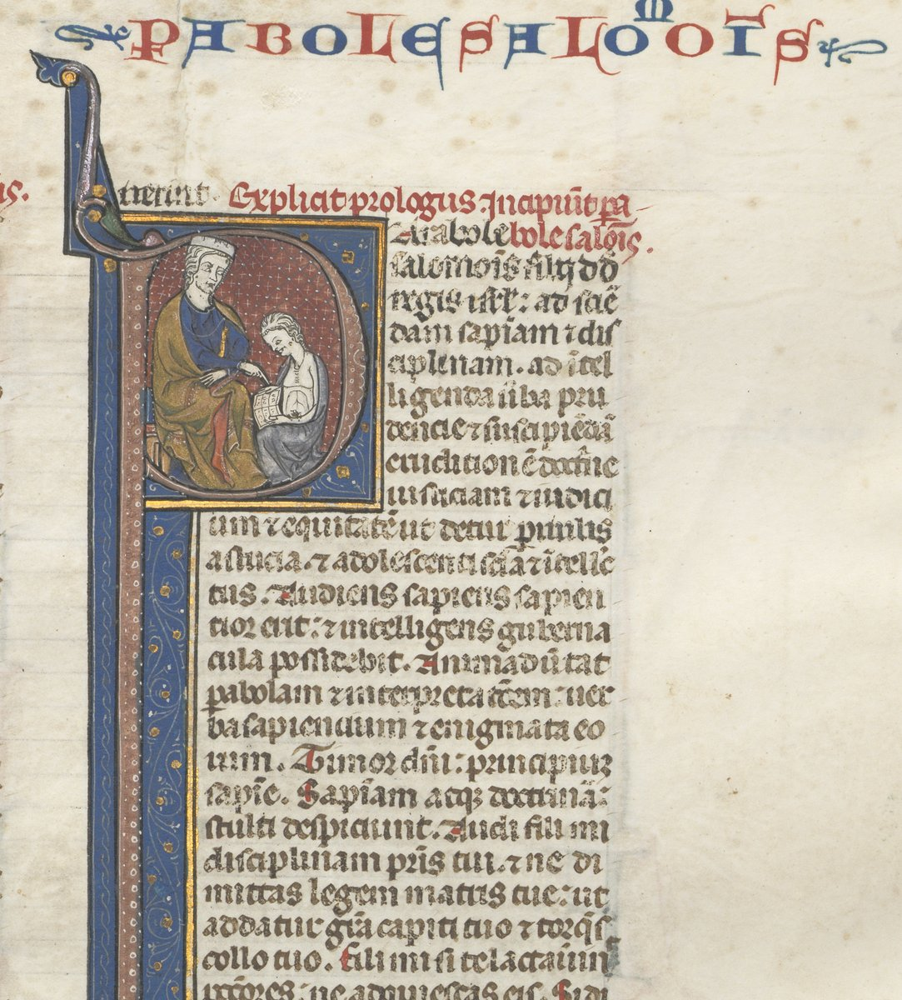

Proverbios 3 — La Traducción Mister

La apertura de Proverbios en una Biblia latina del siglo XIII, encabezada Parabole Salomonis, «los proverbios de Salomón». Dentro de la inicial P, un Salomón coronado enseña a un joven con un libro abierto; el título del museo nombra al alumno como su hijo Roboam. La columna de al lado es Proverbios 1, y las líneas de abajo empiezan Audi fili mi disciplinam patris tui, «Oye, hijo mío, la disciplina de tu padre» (1:8). El capítulo 3 abre con la misma llamada, «Hijo mío».
y guarde tu corazón mis mandamientos;nota
y paz te añadirán.nota
a los ojos de Dios y del ser humano.nota
y no te apoyes en tu propio entendimiento.nota
y él enderezará tus sendas.nota
teme a Jehová, y apártate del mal.nota
y refrigerio para tus huesos.nota
y de lo primero de todos tus productos;nota
y tus lagares reventarán de mosto.nota
ni aborrezcas su reprensión;nota
y como un padre al hijo en quien se complace.nota
y el ser humano que obtiene discernimiento;nota
y su fruto, mejor que el oro fino.nota
y todos tus deleites no la igualan.nota
en su izquierda, riquezas y honra.nota
y todas sus sendas son paz.nota
y los que la retienen son felices.nota
afirmó los cielos con discernimiento.nota
y las nubes destilan rocío.nota
guarda la sabiduría práctica y la discreción,nota
y gracia para tu cuello.nota
y no golpearás tu pie.nota
te acostarás, y tu sueño será dulce.nota
ni la ruina de los malvados cuando venga;nota
y guardará tu pie de ser atrapado.nota
cuando esté en el poder de tu mano hacerlo.nota
y mañana te daré», cuando lo tienes contigo.nota
mientras él habita seguro junto a ti.nota
si no te ha hecho ningún mal.nota
ni escojas ninguno de sus caminos;nota
pero su consejo íntimo está con los rectos.nota
pero él bendice la morada de los justos.nota
Notas del traductor — versículo por versículo
Mi enseñanza y mis mandamientos. «Hijo mío, no olvides mi enseñanza, y guarde tu corazón mis mandamientos»: torá y mitsvot, las dos grandes palabras del Deuteronomio, dichas aquí por un padre. El capítulo 1 hacía oír al hijo «la disciplina de tu padre» y «la enseñanza de tu madre» (Proverbios 1:8, ya en estas páginas), y «enseñanza» sigue siendo la traducción de torá en este libro, porque se trata de la instrucción de unos padres y no de un código legal. «Largura de días y años de vida» es la promesa que el Deuteronomio une a guardar los mandamientos, «para que tus días se prolonguen» (Deuteronomio 6:2, ya en estas páginas). La NVI tiene «no te olvides de mis enseñanzas»; la RV60 «no te olvides de mi ley»; la TNM 1987 «no olvides mi ley».
La bondad y la verdad. «La bondad y la verdad no te abandonen»: jésed y emet, la pareja por la que el siervo de Abraham da gracias a Jehová, «su bondad y su fidelidad» (Génesis 24:27, ya en estas páginas), y la que los espías prometen a Rahab (Josué 2:14, ya en estas páginas). Aquí son casi personas, compañeras que podrían marcharse. El griego las convierte en obras, «actos de misericordia y actos de fidelidad». La RV60 tiene «Nunca se aparten de ti la misericordia y la verdad»; la TNM 1987 «la bondad amorosa y el apego a la verdad»; la NVI «el amor y la verdad».
En el cuello y en el corazón. «Átalas a tu cuello, escríbelas en la tabla de tu corazón»: el atar es del Deuteronomio, «las atarás por señal sobre tu mano» (Deuteronomio 6:8), y la tabla, luaj, es la palabra de las tablas de piedra de la ley (Éxodo 24:12). El cuello es donde el capítulo 1 colgaba los «collares para tu cuello» de la sabiduría (1:9, ya en estas páginas). Jeremías promete esa misma escritura como un pacto nuevo, «daré mi ley en su interior, y la escribiré en su corazón» (Jeremías 31:32), y Pablo llama a los corintios una carta escrita «en tablas de corazones de carne» (2 Corintios 3:3, todos ya en estas páginas). La RV60 tiene «Escríbelas en la tabla de tu corazón»; la RV 1909 «Atalas á tu cuello»; la TNM 1987 «Átalos alrededor de tu garganta».
Favor y buena perspicacia. «Y halla favor y buena perspicacia a los ojos de Dios y del ser humano»: jen, el favor que Noé «halló a los ojos de Jehová» (Génesis 6:8, ya en estas páginas), y sékhel tov, de la raíz de haskel, «perspicacia» (1:3, ya en estas páginas). El niño Samuel «era bien visto tanto por Jehová como por los hombres» (1 Samuel 2:26), y Jesús «crecía en sabiduría y en estatura, y en favor para con Dios y los hombres» (Lucas 2:52, los dos ya en estas páginas). El griego lee «procura lo bueno delante del Señor y de los hombres», y Pablo repite esas palabras dos veces (Romanos 12:17; 2 Corintios 8:21, los dos ya en estas páginas). La TNM 1987 tiene «halla favor y buena perspicacia»; la RV60 «hallarás gracia y buena opinión»; la NVI «tendrás buen nombre».
Confía en Jehová con todo tu corazón. «Confía en Jehová con todo tu corazón, y no te apoyes en tu propio entendimiento»: batáj, confiar, frente a nishán, apoyar todo el peso en algo. Aquello en lo que no hay que apoyarse es biná, «entendimiento», la misma facultad que el capítulo 1 se propuso enseñar (1:2, ya en estas páginas); el libro no la desprecia, se niega a hacer de ella el apoyo. El griego tiene «no te enaltezcas por tu propia sabiduría». La RV60 tiene «Fíate de Jehová de todo tu corazón, Y no te apoyes en tu propia prudencia»; la TNM 1987 «no te apoyes en tu propio entendimiento»; la RV 1909 «no estribes en tu prudencia».
Conócelo. «En todos tus caminos conócelo»: daéhu, de yadá, el verbo de daat, «conocimiento». El conocido «reconócelo» lo vuelve cuestión de dar crédito; el hebreo pide el conocer que reclaman los profetas, como cuando Jeremías dice que vendrá el día en que ya no se enseñarán unos a otros «Conoce a Jehová», «porque todos me conocerán» (Jeremías 31:33, ya en estas páginas). «Y él enderezará tus sendas»: yeyashér, allanar y poner recto. El griego tiene orthotomē, «trazará rectos tus caminos», y añade «y tu pie no tropezará»; su verbo es el que usa 2 Timoteo para «que maneja con rectitud la palabra de verdad» (2 Timoteo 2:15, ya en estas páginas). La RV60 tiene «Reconócelo en todos tus caminos, Y él enderezará tus veredas»; la TNM 1987 «tómalo en cuenta»; la NVI «él enderezará tus sendas».
No sabio a tus propios ojos. «No seas sabio a tus propios ojos; teme a Jehová, y apártate del mal»: Pablo cita la primera línea, «No sean sabios en su propia opinión» (Romanos 12:16; compárese 11:25), y la segunda es lo que se dice de Job, un hombre «temeroso de Dios y apartado del mal» (Job 1:1, todos ya en estas páginas). La RV60 tiene «No seas sabio en tu propia opinión»; la TNM 1987 «No te hagas sabio a tus propios ojos»; la NVI «huye del mal».
Curación para tu ombligo. «Será curación para tu ombligo y refrigerio para tus huesos»: shor es el ombligo, o el cordón, el lugar por donde entró la vida; el griego leyó una palabra con una letra distinta y tiene «tu cuerpo». Shicuy, refrigerio, es en otros lugares «bebida»: «mi aceite y mi bebida» (Oseas 2:7) y «mi bebida mezclé con llanto» (Salmo 102:10, ninguno de los dos todavía en estas páginas). La TNM 1987 tiene «curación a tu ombligo y refrigerio a tus huesos»; la RV 1909 «medicina á tu ombligo, Y tuétano á tus huesos»; la RV60 «medicina a tu cuerpo».
De lo primero de todos tus productos. «Honra a Jehová de tus bienes, y de lo primero de todos tus productos»: kabéd, honrar, es dar peso, la raíz de kavod, y el capítulo terminará con esa palabra (v35). «Lo primero» es reshit, las primicias de la ley, «lo primero de todo el fruto del suelo» llevado en una canasta (Deuteronomio 26:2, ya en estas páginas), y la misma palabra que «el temor de Jehová es el principio del conocimiento» (1:7, ya en estas páginas). El griego añade dos veces la justicia: «de tus justos trabajos … de tus frutos de justicia». La RV60 tiene «Honra a Jehová con tus bienes, Y con las primicias de todos tus frutos»; la TNM 1987 «con tus cosas valiosas»; la NVI «con tus riquezas».
Graneros y lagares. «Y tus graneros se llenarán con abundancia, y tus lagares reventarán de mosto»: «tus graneros» está en dos versículos de la Biblia hebrea, este y la bendición de Deuteronomio 28:8, «Jehová mandará que la bendición esté contigo en tus graneros» (ya en estas páginas). Yifrótsu, «reventarán», es el verbo de romper hacia fuera; tirosh es el vino nuevo, el mosto recién salido del lagar. La RV60 tiene «Y serán llenos tus graneros con abundancia»; la RV 1909 «Y serán llenas tus trojes con abundancia»; la TNM 1987 «tus propias tinas de lagar rebosarán de vino nuevo».
No rechaces, no aborrezcas. «Hijo mío, no rechaces la disciplina de Jehová, ni aborrezcas su reprensión»: musar es «disciplina», como en todo este libro, la corrección que forma. Timás, «rechaces», es el verbo del pueblo que «rechazó» a Jehová como rey (1 Samuel 8:7, ya en estas páginas), y taqots, «aborrezcas», es el «aborrezco mi vida» de Rebeca (Génesis 27:46, ya en estas páginas). Esta forma del verbo está en un versículo de la Biblia hebrea. El Deuteronomio había trazado la misma imagen: «tal como un hombre disciplina a su hijo, Jehová tu Dios te disciplina a ti» (Deuteronomio 8:5, ya en estas páginas). La TNM 1987 tiene «La disciplina de Jehová, oh hijo mío, no rechaces; y no aborrezcas su censura»; la RV60 «No menosprecies, hijo mío, el castigo de Jehová»; la RV 1909 «No deseches, hijo mío, el castigo de Jehová».
Como un padre al hijo. «Porque Jehová reprende al que ama, y como un padre al hijo en quien se complace»: yojíaj, de yakaj, discutir un caso hasta dejarlo en claro. La segunda línea no tiene verbo propio; toma prestado «reprende» de la primera, de modo que el padre reprende al hijo en quien se complace. El griego leyó las mismas letras, u-kh’av, «y como un padre», como un verbo, «y causa dolor», y por eso imprime «y azota a todo hijo que recibe». Esa es la forma que cita Hebreos: «porque Jehová disciplina al que ama, y azota a todo hijo que recibe» (Hebreos 12:5–6, ya en estas páginas), y Cristo resucitado dice «Yo reprendo y castigo a todos los que amo» (Apocalipsis 3:19, ya en estas páginas). La RV60 tiene «Porque Jehová al que ama castiga, Como el padre al hijo a quien quiere»; la TNM 1987 «aun como lo hace un padre a un hijo en quien se complace»; la NVI «como corrige un padre a su hijo querido».
Feliz el ser humano. «Feliz el ser humano que halla la sabiduría, y el ser humano que obtiene discernimiento»: ashré, la primera palabra del Salterio, «Feliz el hombre» (Salmo 1:1, ya en estas páginas), y aquí el genérico adam, cualquier ser humano. El pasaje cierra con la misma raíz, «los que la retienen son felices» (v18), meushar, de modo que los seis versículos quedan enmarcados por la felicidad. Tevuná, «discernimiento», es hermana de biná, «entendimiento» (v5), de la misma raíz y distinta en esta traducción (tevuná). La TNM 1987 tiene «Feliz es el hombre que ha hallado sabiduría, y el hombre que consigue discernimiento»; la RV60 «Bienaventurado el hombre que halla la sabiduría»; la NVI «Dichoso el que halla sabiduría».
Mejor que la plata, más preciosa que los corales. «Porque su ganancia es mejor que la ganancia de la plata, y su fruto, mejor que el oro fino»: sajar es el comercio, la ganancia del mercader. «Es más preciosa que los corales»: peninim, la palabra que pone a la mujer de valor «muy por encima de los corales» (Proverbios 31:10, ya en estas páginas); los «rubíes» habituales son una conjetura. El texto escrito tiene una grafía inusual de la palabra, que se lee en su forma ordinaria. El griego añade dos líneas: ningún mal se le opondrá, y es bien conocida de todos los que se le acercan. La TNM 1987 tiene «Es más preciosa que los corales»; la RV60 «Más preciosa es que las piedras preciosas».
Caminos de agrado. «Largura de días hay en su mano derecha; en su izquierda, riquezas y honra»: lo que el versículo 2 prometía de la enseñanza del padre, ahora lo tiene la sabiduría en las manos. «Sus caminos son caminos de agrado, y todas sus sendas son paz»: noam, delicia, la palabra del deseo del salmista de «contemplar la hermosura de Jehová» (Salmo 27:4, ya en estas páginas). La RV60 tiene «Sus caminos son caminos deleitosos, Y todas sus veredas paz»; la TNM 1987 «caminos de agradabilidad»; la NVI «Sus caminos son placenteros».
Un árbol de vida. «Es árbol de vida para los que se asen de ella»: «árbol de vida», sin artículo, está en cuatro versículos de la Biblia hebrea, todos en Proverbios (aquí, 11:30, 13:12 y 15:4). Génesis tiene «el árbol de la vida», el que estaba en medio del huerto y del que se apartó al ser humano (Génesis 2:9; 3:24, ya en estas páginas), y Apocalipsis lo devuelve, «un árbol de vida … para la curación de las naciones» (Apocalipsis 22:2, ya en estas páginas). En la sinagoga, los versículos 18 y 17 se cantan cuando el rollo de la Torá vuelve al arca, de modo que la sabiduría de este capítulo se canta de la Torá misma. El griego añade «y seguro para los que se apoyan en ella como en el Señor». La RV60 tiene «Ella es árbol de vida a los que de ella echan mano, Y bienaventurados son los que la retienen»; la TNM 1987 «los que la mantienen firmemente asida han de ser llamados felices»; la NVI «para quienes la abrazan».
Con sabiduría fundó la tierra. «Jehová con sabiduría fundó la tierra; afirmó los cielos con discernimiento. Por su conocimiento se abrieron los abismos»: las tres palabras de la enseñanza del padre, sabiduría, discernimiento y conocimiento, son las herramientas con que Dios hizo el mundo. «Los abismos», tehomot, y «se abrieron», nivqeú, son las palabras del diluvio, cuando «todas las fuentes del gran abismo se abrieron» (Génesis 7:11, ya en estas páginas); aquí esa misma apertura riega la tierra. El relato que la propia sabiduría hace de la creación, «Jehová me poseyó en el principio de su camino», llega en Proverbios 8. La RV60 tiene «Jehová con sabiduría fundó la tierra; Afirmó los cielos con inteligencia»; la TNM 1987 «Afirmó sólidamente los cielos con discernimiento»; la RV 1909 «Con su ciencia se partieron los abismos».
Que no se aparten. «Hijo mío, no se aparten de tus ojos; guarda la sabiduría práctica y la discreción»: yaluzu, de luz, desviarse, y la misma raíz vuelve en el versículo 32 para «el torcido», naloz: el hijo no debe dejar que la sabiduría se desvíe, o se volverá el que se desvía. Tushiyá es «la sabiduría práctica», el consejo sólido que funciona; mezimá es «la discreción», como en 1:4 (ya en estas páginas). «Gracia para tu cuello» vuelve al cuello del versículo 3. La TNM 1987 tiene «Salvaguarda la sabiduría práctica y la capacidad de pensar»; la RV60 «Guarda la ley y el consejo»; la NVI «conserva el buen juicio».
Andar y dormir. «Entonces andarás tu camino con seguridad, y no golpearás tu pie»: tigof, el verbo del salmo, «no sea que golpees tu pie contra una piedra» (Salmo 91:12), que el tentador cita a Jesús (Mateo 4:6, los dos ya en estas páginas). «Si te acuestas, no sentirás pavor; … no temas el pavor repentino»: pájad, verbo y sustantivo, dos veces en dos versículos. «La ruina de los malvados» puede ser la ruina que traen los malvados o la que cae sobre ellos; el hebreo admite las dos. El griego del versículo 25, «no temerás espanto», resuena en 1 Pedro 3:6 (ya en estas páginas). La RV60 tiene «tu sueño será grato» y «No tendrás temor de pavor repentino, Ni de la ruina de los impíos cuando viniere»; la TNM 1987 «ni la tempestad sobre los inicuos».
Jehová tu confianza. «Porque Jehová será tu confianza, y guardará tu pie de ser atrapado»: késel, confianza, es también la palabra de los lomos, «la grasa que está sobre ellos, la que está sobre los lomos» (Levítico 3:4, ya en estas páginas), y sus letras forman kesil, el necio torpe de 1:22 (ya en estas páginas). «Tu confianza» en esta forma está en un versículo de la Biblia hebrea. «Atrapado», lakhed, es el lazo que tiende el cazador. La RV60 tiene «Porque Jehová será tu confianza, Y él preservará tu pie de quedar preso»; la TNM 1987 «él ciertamente guardará tu pie de captura»; la NVI «te librará de caer en la trampa».
El bien a sus dueños. «No niegues el bien a sus dueños cuando esté en el poder de tu mano hacerlo»: mi-beálav, «de sus amos», aquellos a quienes el bien pertenece, como el salario de un obrero o el préstamo de un vecino. «En el poder de tu mano» es el modismo de Labán, «está en el poder de mi mano hacerte mal» (Génesis 31:29, ya en estas páginas), y de la maldición, «y no está en el poder de tu mano» (Deuteronomio 28:32, ya en estas páginas). Tres palabras de estos versículos se escriben de un modo y se leen de otro: «tus manos», leído «tu mano» (v27); «tus prójimos», leído «tu prójimo» (v28); y «pleitees», escrito tarov y leído tariv (v30). La RV 1909 tiene «No detengas el bien de sus dueños»; la RV60 «No te niegues a hacer el bien a quien es debido»; la TNM 1987 «cuando sucede que está en el poder de tu mano».
Mañana te daré. «No digas a tu prójimo: “Anda, y vuelve, y mañana te daré”, cuando lo tienes contigo»: el griego añade «porque no sabes qué dará a luz el día siguiente», una línea cercana a Santiago, «que no saben cómo será su vida mañana» (Santiago 4:14, ya en estas páginas). «No trames mal contra tu prójimo mientras él habita seguro junto a ti»: tajarosh es el verbo de arar y de grabar, y el mal se abre como un surco. «Seguro» es la-vétaj, la palabra del versículo 23. La RV60 tiene «No intentes mal contra tu prójimo Que habita confiado junto a ti»; la TNM 1987 «No fabriques ninguna cosa mala contra tu semejante»; la NVI «No planees el mal contra tu prójimo».
El torcido y los rectos. «No envidies al hombre de violencia»: jamás, la violencia que llenó la tierra antes del diluvio (Génesis 6:11, ya en estas páginas). «Porque el torcido es abominación para Jehová, pero su consejo íntimo está con los rectos»: naloz, el que se desvía, de la raíz del versículo 21; y sod, el círculo íntimo, la palabra de la prueba de Jeremías, «¿quién ha estado en el consejo de Jehová?» (Jeremías 23:18, ya en estas páginas). «La maldición de Jehová está en la casa del malvado, pero él bendice la morada de los justos»: navé, el pastizal-morada del pastor. La RV60 tiene «Mas su comunión íntima es con los justos»; la TNM 1987 «el sinuoso es cosa detestable a Jehová, pero Él tiene intimidad con los rectos»; la RV 1909 «Mas su secreto es con los rectos».
Los burladores y los humildes. «De los burladores él se burla, pero a los humildes da gracia»: el hebreo empieza con im, «si» o «ciertamente», y un «él» enfático, de modo que la burla vuelve sobre los burladores. Son los letsim de 1:22 (ya en estas páginas). El texto escrito tiene aniyim, «los afligidos», leído anavim, «los humildes»; las dos palabras vienen de una sola raíz. El griego tiene «El Señor se opone a los soberbios, pero da gracia a los humildes», y en esa forma la línea se cita dos veces en el Nuevo Testamento, con «Dios» en lugar de «el Señor» (Santiago 4:6; 1 Pedro 5:5, los dos ya en estas páginas). La RV60 tiene «Ciertamente él escarnecerá a los escarnecedores, Y a los humildes dará gracia»; la TNM 1987 «Si se trata de burladores, él mismo escarnecerá»; la NVI «Él se burla de los burladores».
Honra y deshonra. «Los sabios heredarán honra, pero los necios se llevan la deshonra»: kavod, honra, es de la raíz de lo pesado, la honra dada a Jehová en el versículo 9; qalón, deshonra, suena como qal, ligero. Merim, «se llevan», es el verbo de alzar en alto, y por eso la KJV inglesa lee «shame shall be the promotion of fools»: lo que los eleva es su deshonra. El griego tiene «los impíos exaltaron la deshonra». La RV60 tiene «Mas los necios llevarán ignominia»; la RV 1909 «Mas los necios sostendrán ignominia»; la TNM 1987 «los estúpidos están ensalzando la deshonra».
Patrones que conviene seguir
Donde esta traducción mantiene las palabras exactas y distintas: «enseñanza» para torá, como en 1:8; «disciplina» para musar; «entendimiento» para biná (v5) y «discernimiento» para tevuná (vv13, 19), con la TNM 1987; «sabiduría práctica» para tushiyá; «discreción» para mezimá, como en 1:4; «la bondad y la verdad» para jésed ve-emet, como en Génesis 24:27 y Josué 2:14; «conócelo» para daéhu; «corales» para peninim, como en 31:10; «árbol de vida»; «se abrieron» para los abismos, como en Génesis 7:11; «tu confianza» para késel; y el hebreo de 3:11–12 y 3:34 conservado donde el Nuevo Testamento cita el griego.
Ecos pagados. La enseñanza del padre y el cuello de 1:8–9; el reshit de 1:7 como primicias; los burladores de 1:22; las tablas de Éxodo 24 y el atar de Deuteronomio 6; los abismos de Génesis 7:11; el árbol de la vida de Génesis 2–3; los graneros de Deuteronomio 28:8; y la disciplina del padre de Deuteronomio 8:5.
Ecos sembrados. La sabiduría en la creación (Proverbios 8:22–31); los otros árboles de vida (Proverbios 11:30, 13:12, 15:4); «escríbelas en la tabla de tu corazón» otra vez (Proverbios 7:3); y «si como a la plata la buscas» (Proverbios 2:4). Ninguno está todavía en estas páginas.
⚠ Nota sobre el orden: Proverbios está en estas páginas en los capítulos 1, 3, 4, 16, 18, 22 y 31. Lo siguiente en orden es Proverbios 2 — «si como a la plata la buscas, y la escudriñas como a tesoros escondidos»: la sabiduría como lo que vale la pena excavar.